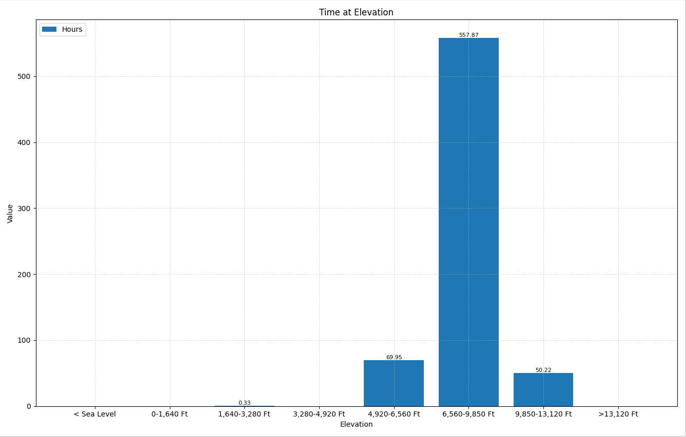

Engine Use Data: Time at Elevation
The Time at Elevation chart displays the distribution of engine operating hours across different altitude ranges, revealing the typical operating environment of the vehicle.

Understanding the Chart
This bar chart shows accumulated run time for each elevation band:
- Horizontal X-Axis (Elevation Band) - Altitude ranges grouped into bands (e.g., 0-1000 ft, 1000-2000 ft, etc.)
- Vertical Y-Axis (Hours) - Total hours the engine operated within each elevation band
- Bar Height - Taller bars indicate more time spent at that altitude range
How Elevation is Measured
The engine's ECU calculates elevation using an atmospheric pressure sensor (also called a barometric pressure sensor). This sensor measures the ambient air pressure surrounding the vehicle.
As altitude increases, atmospheric pressure decreases in a predictable relationship:
- Sea level - Approximately 14.7 psi (101.3 kPa)
- 5,000 ft (1,524 m) - Approximately 12.2 psi (84.3 kPa)
- 10,000 ft (3,048 m) - Approximately 10.1 psi (69.7 kPa)
The ECU converts the measured pressure to an estimated elevation value. This data is logged over time to create the elevation histogram.
Note: Weather conditions can affect barometric pressure readings. High or low pressure weather systems may cause minor variations in the calculated elevation.
Challenges of High-Altitude Operation
Diesel engines face several challenges when operating at higher elevations due to reduced air density:
| Challenge | Description |
|---|
| Reduced Air Density | Less oxygen per cubic foot of air means less oxygen available for combustion. At 10,000 ft, air contains roughly 30% less oxygen than at sea level. |
| Power Loss | Naturally aspirated engines lose approximately 3% power per 1,000 ft of elevation. Turbocharged engines compensate partially but still experience derating at extreme altitudes. |
| Turbocharger Stress | The turbo must spin faster to compress the thinner air to the required boost pressure, increasing shaft speed, heat, and bearing wear. |
| Incomplete Combustion | Reduced oxygen availability can lead to incomplete fuel burn, causing increased soot production, higher exhaust temperatures, and elevated emissions. |
| DPF Loading | Increased soot from incomplete combustion accelerates DPF loading, potentially triggering more frequent regeneration cycles. |
ECU Altitude Compensation
Modern diesel ECUs use barometric pressure data to adjust engine operation:
- Fuel injection timing - Adjusted to optimize combustion with reduced oxygen
- Boost pressure targets - Modified to maintain power while protecting the turbocharger
- EGR rates - Reduced at altitude to preserve available oxygen for combustion
- Power derating - Gradual reduction in available torque to prevent damage at extreme elevations
Tip: If a vehicle frequently operates at high elevation, consider this when diagnosing power complaints, turbo issues, or excessive DPF regeneration events.
Analyzing Elevation Distribution
When reviewing this chart, consider:
- Single elevation peak - Vehicle operates primarily in one geographic region
- Wide distribution - Vehicle travels across varying terrain
- High-altitude concentration - May explain increased wear on turbo, DPF issues, or startability issues
- Comparison to complaints - Correlate elevation data with reported performance issues
North Dakota Factory Time: Most machines are assembled and tested in North Dakota, which sits at approximately 1,500-2,000 ft elevation. You may notice a small amount of run time logged at this elevation even if the machine operates elsewhere. This is normal and represents factory testing and initial run-in time before the machine was shipped to its final destination.